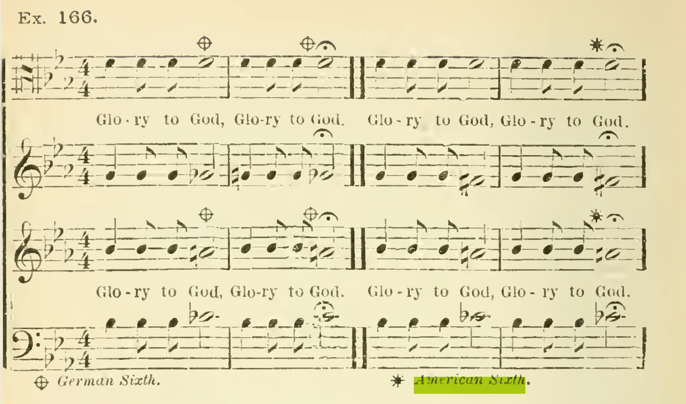

本文中的唱名标记法，与优先考虑关系调（平行调）关系的第I~V章不同，此处优先采用古典派特有的同主音调对称关系，即在小调中也将主音称为Do。
在上一篇文章中我们介绍了“那不勒斯和弦”，同样地，通过“变化（变音）”获得的经典和弦模式还有其他几种，这里我们就来介绍它们。
 1. 两个倾向音
1. 两个倾向音
在古典音乐中，重属和弦（Double Dominant / 属之属，通常记作DD或V/V）是不可或缺的经典，这一点我们在前面已经讲解过。无论在大调还是小调中都是如此。

通过引入“Fa♯→Sol”这一半音关系，向V和弦的进行变得更加平滑。这在第II章中已经讨论过，重属和弦在流行音乐中也是常见的老面孔。
另一方面，“小调中的重属和弦”在流行音乐中的使用频率并没有那么高，因此它也是营造高雅古典风味的关键和弦之一。
普通的II级与重属和弦的区别
这里我们将“小调中的重属和弦”与原本的“小调II级和弦”并列进行对比，如下所示：

一对比就会发现一件事情：在得到了“Fa♯”的同时，却失去了另一个具有强烈倾向性的音“La♭”…… 仔细想想这真是太遗憾了。毕竟我们已经在IVm或♭VI和弦中无数次领略过La♭那迷人的声音色彩。
有没有什么办法能够将魅力十足的倾向音Fa♯与La♭兼收并蓄？ 把两者结合起来，能否制造出一个混血杂交的和弦？这种野心，实际上在历史上以各种形式付诸了实践。
2. 世界三大增六和弦
首先作为起跑线，Fa♯与La♭如果距离太近会产生激烈的刺耳不协和，因此需要将两者分开放置。

像这样，为两人各自准备好解决目标音Sol。
此时La♭与Fa♯之间的音程关系比“大六度”还要宽半音，因此被称为“增六度”。这与“小七度”是等音程（异名同音），但考虑到两者的声部导向与出身背景，比如把Fa♯改写为Sol♭是并不合适的。它始终是不折不扣的“增六度”。
以这种置于增六度关系的两个音为基础构建的各类和弦，统称为增六和弦（Augmented Sixth Chord）。
IT 意大利六和弦
首先如果用最低限度的音数来排兵布阵，就会想到下面这种形态：

添加进来的是既可平稳顺行走向Re也可走向Ti的Do音。仅加入一个中性、不带过多附加滋味的音，纯粹让人们品味两个倾向音半音级进解决的妙境，这就是它的设计配方。如同玛格丽特披萨般仅由最基本元素构成的这个和弦，被称为意大利六和弦（Italian Sixth），通常如上谱所示记作It+6或It6。
在四部和声编制中必须重复某一个音，但如果偏向其中任何一个倾向音都会破坏平衡，因此重复的必然是Do音。 至于将这个和弦的根音视作Re（即重属七导音省略根音形态），还是单纯视作La♭，亦或是Fa♯，理论书籍之间各有分歧，但主流通常倾向于视其根音为Re。
后续进行除了直接走向V之外，当然也可以进行到I2→V（第二转位终止四六和弦）。那种情况下，将重复的Do音之一连接到Mi即可。

FR 法国六和弦
除了上述阵型，当然还可以有其他设计。有人自然会想：与其重复Do音，不如把原本被排除掉的原根音Re加回来，这样音响不就更充实了吗？

这个风味更加浓郁饱满的和弦，被称为法国六和弦（French Sixth）。它的魅力在于调味的丰富，但在作曲中有时这个Re的味道可能显得有些多余，因此需要根据具体音乐语境选择使用。
GR 德国六和弦
既然如此，还有一种想法：既然是省略根音和弦，不如干脆用上它的拿手好戏——叠加“九音（9th）”，这样会不会更有意思？也就是不加Re，而是加入属于小九度的降Mi（E♭）。

这种令人联想到减七和弦般浓郁厚重音响的和弦，被称为德国六和弦（German Sixth）。德国六和弦如果直接走向V，必然会产生“平行五度（连续五度）”的禁则。有些理论书将此作为特例予以认可，实际上莫扎特和贝多芬也以相当高的频率打破过这一禁则[1]，但如下谱那样通过I2（第二转位）进行过渡来回避禁则，和声上会更为优美。

三大巨头（Big Three）
在“增六和弦”大家族中，意大利六、法国六与德国六成为了确立了专用名称的最具代表性的三大成员。甚至有学者将它们戏称为“三大巨头（Big Three）”[2]。

按照It、Fr、Gr的顺序排列，所添加的音恰好是Do、Re、Mi，非常清晰易懂。另外如果不小心忘记了谁是谁，只要在英语里说一句“I ForGet.”，三个国家的首字母便浮现出来——这一极具品味的口诀，早在100年前的书籍中就被作者得意洋洋地提出来了[3]。
也有学者将赋予三大和弦各自特色的这些音符称为护照音（Passport Pitch）[4]。归根结底，给和弦冠以国家名称本身就带有一点玩笑性质，因此后世的学者们也纷纷跟风，宛如在开一场“幽默发布会”。
A小调的情况
如果不是在C小调，而是在A小调中来看，这三个和弦如下所示：

这样一对比，彼此的差异就一目了然了。意式和弦极其简洁；法式和弦中与低音形成的关系带来了额外的混浊与张力；而德式和弦中与低音形成的纯五度关系则让和弦更具刚性坚实质感，展现出鲜明的性格差异。
大调中的增六和弦
与“那不勒斯和弦”一样，各类增六和弦也可以在大调中使用。例如“法国六和弦”：

正如上谱。由于其核心理念是“半音上行与半音下行的两个倾向音同时收入囊中”，因此自然也会带有La♭。与小调时不同，由于伴随了两个临时升降号，其异质感更加强烈。伴随着明亮的Re音的“法国六和弦”，在大调中给人一种相对比较易于驾驭的印象。
为什么用国家命名？
顺便一提，虽然冠以三国的名字，但并没有明确确凿的证据表明这些和弦在各自国家被使用得格外频繁。名称的诞生与普及至今仍带有未解之谜。
在相对早期的文献中，1810年的一本书提到：“大概是因为（法国人）拉莫的理论书中才记载了所以叫法国六和弦”、“（德国人）格劳恩（Graun）等人经常有效地使用所以叫德国六和弦”[5]。 而在1835年的另一本书中则写道：“因为声音柔和所以叫意大利六和弦”、“法国六和弦与德国六和弦是因为在该国乐派中常用”，可见当时似乎存在“意大利＝柔和”的刻板印象，名称由此而来[6]。
然而考虑到称谓产生到载入理论书之间的时间差，要彻底追溯其源头依然极其困难。
既然根音尚未定论……
“冠以与音符无关的名字难以理解”这种批评自古有之，但另一方面，由于理论家们对于其根音究竟该算在哪里各执一词，作为暂时的共同词汇需要一个中立的名字，这一理由也是不可忽视的。这一点与我们在上一篇探讨的“那不勒斯六和弦”完全相通。
而且，如果按照常规学理去称呼它，名字会变得无比冗长，因而最终大家都欣然接受了这套名称。
以II级为根音立场时各和弦的名称：
| 简称 | 正式说明 |
|---|---|
| IT 意大利六和弦 | （小调的）重属七和弦・减五音・第二转位・省略根音 |
| FR 法国六和弦 | （小调的）重属七和弦・减五音・第二转位 |
| GR 德国六和弦 | （小调的）重属九和弦・减五音・第二转位・省略根音 |
在曲目分析过程中如果要频繁面对这些繁文缛节，想给它们起个别名的心情也完全可以理解。取一个能让人产生独特亲切感的名字，在实践中倒也绝不是什么坏事。
3. 三大巨头的实际范例
让我们来听几个增六和弦的典型范例。
IT 贝多芬 – 第五交响曲“命运” Op.67 (第一乐章)
极具代表性、非常直观使用“意大利六和弦”的范例，正是贝多芬的《命运》。

它在以下片段中极具标志性地出现：

夹在I与V之间的那个极其强烈的声响，正是It+6。同时收获La♭与Fa♯这两个“倾向音”，孕育出了深沉厚重的音响。
假设场景
我们不妨将其与普通朴素的和弦做一番对比。
缺少Fa♯的情况：
缺少La♭的情况：
两种都显得美中不足。缺少Fa♯（即普通的II¹和弦，不带变音记号）完全不够“辛辣刺激”；而缺少La♭（以♯IV为根音的经过减和弦）虽然稍好一些，但明目张胆地炫耀“我用了Fa♯哦”的感觉未免略显直白平庸。
这样对比聆听，就能深刻体会到增六和弦所发挥的巨大作用。
FR 肖邦 – 前奏曲 Op.28 (第20首)

在介绍“那不勒斯六和弦”时也提到过的这首肖邦作品中，极其有效地使用了“法国六和弦”。这是出现在那不勒斯和弦稍早前的一个乐段。虽然第4、5个和弦如何标记符号让人颇费思量，但这里我们将其处理为向属调的短暂离调。“法国六和弦”正是那个最为强烈的第6个和弦。Fr+6本身源自重属和弦，也就是从属调借用而来的，因此可以说它在这里起到了某种枢纽和弦（Pivot Chord）的功能。
赋予法国和弦独特“风味”的Re音，与低音构成了一个三。像本例这样将其置于最高声部（旋律声部）时，内声部构成了“Do-Fa♯”的三全音，外声部则构成了“La♭-Re”的三全音，形成极为鲜明清晰的双重冲击。
假设场景
如果把Re换成Do，变成“意大利六和弦”的话……
听起来就是这样。果然还是少了一点张力，风格显得有些保守甚至略显陈旧，变成了纯粹的古典派风味。由此可见音符的选择经过了何等精密的推敲。
GR 贝多芬 – 钢琴奏鸣曲第13号 Op.27-1 (第四乐章)
开头的破碎节奏令人印象深刻，而在其后接踵而来的极其典型的“贝多芬式终止式”中，便使用了“德国六和弦”。

由于是B♭小调，识谱稍微有些费劲，这也是没办法的事。被标为红色的音符就是象征着德国六和弦的核心音。如果搞不清楚哪个音是什么，只要回想起最初的构想——“以半音向属音级进解决的两个倾向音”，就能回忆起每个音所承担的职责。 在这里，为了避免产生平行五度而妥善经由I2（第二转位终止四六和弦）进行过渡也是一大要点。“莫扎特和贝多芬也打破过禁则”这种说法虽然有一半是对的，但在他们认为应当遵守的地方，大师们依然是非常严谨规范地加以遵守的。
4. 各国的增六和弦
好了，正如前文所述，意、法、德是增六和弦中的“三大巨头”。反过来说，这也意味着三大巨头之外还有别的增六和弦。增六和弦的本质在于“两个倾向音各自半音反向进行、最终解决到八度”，因此其余部分完全留有大把自定义的空间。
瑞士六和弦
首先是极为小巧的一处自定义。当我们把“德国六和弦”搬到大调中使用时，异名同音的拼写上会产生违和感。

情况就是这样：大调中的I2与小调不同，Mi是还原的，因此在加入降Mi的“德国六和弦”场合，乐谱上会出现“降Mi解决到Mi”这种怎么看都很别扭的写法。
于是，当后续声部向上进行时，有时会换一种拼写写成“Re♯”，美国理论家沃尔特·皮斯顿（Walter Piston）将其称为瑞士六和弦（Swiss Sixth）。

为什么叫瑞士呢？据说是因为（Mi的拼写改成Re之后）“同时具备了德国与法国的特征”。瑞士恰好位于德国与法国之间，公用语言中德语与法语并列，是德法文化交融的国家，于是便借用了“瑞士”之名。这份幽默感我们也该学一学¹。
不过与意法德“三大巨头”相比，这个名字多少有半开玩笑的成分。保持降Mi不变（反正最终也要解决到Re）也不算差；即使写成Re♯，继续叫“德国六和弦”也毫无问题。
美国六和弦
顺带一提，注意到这个异名同音问题并主张加以区分的，其实早在皮斯顿出生之前的1876年就已出现，美国理论家H.R.帕尔默（H.R. Palmer）的著作中留有记述。他把这个“瑞士六和弦”命名为“美国六和弦（American Sixth）”。


上面那一页中，他细致地展示了“异名同音选择哪一方，乐谱所传达的信息就会随之改变”。不过书中并未写明称其为“美国”的明确理由，或许只是取了祖国的名字。如果这份幽默能像“瑞士”那样机智，说不定会流传得更广一些（话说回来，“瑞士六和弦”其实也没多少人知道）。
日本六和弦
回到正题。我们也可以反过来，把稳坐三大巨头之中的“Do”刻意挪走，换成更不稳定的“Si♭”试试看。

以法国六和弦为基础做这样的改造，便又诞生了一个新的增六和弦。
这个和弦其实也有个昵称——“日本六和弦（Japanese Augmented Sixth）”。来历稍有不同：这个和弦在2018年前后曾在网络上小小地火过一阵，美国音乐研究者Joshua Taipale提出了这一名称。因为在J-Pop中，这个和弦被特色性地使用，而非古典²。

像古典音乐中那样复杂的和弦居然在J-Pop里备受宠爱，实在是一桩趣事。虽说它无法与“三大巨头”比肩，但将来或许能获得与“瑞士六和弦”相当的地位。

音响上它可以像这样，以类似法国六和弦的独特风味来配置。其实上方三个声部恰好偶然构成了增三和弦（Aug）的构成音，这正是它产生奇妙味道的原因。
“日本六和弦”的实例
要找非“三大巨头”的增六和弦实例相当不容易。“日本六和弦”实际被使用的例子，可以举出勋伯格的《室内交响曲第1号》。
第3小节，低音取G♭音的地方，出现了“G♭-B♭-C-E-A♭”这种形态的和弦。对“日本六和弦”来说B♭音是多余的，但在高声部形成了增三和弦这一“日本六和弦”特有的性格，依然可以明确确认³。
英国六和弦
我们也可以不用带有自然小调气息的Si♭，而是把导音Si♮提前用上去。

这也很有意思。其实就连这个和弦也并非无名——20世纪初，英国理论家亚瑟·伊格尔菲尔德·赫尔（Arthur Eaglefield Hull）同样取祖国的名字，将其命名为“英国六和弦（English Sixth）”⁴。然而这个名字遗憾地几乎没能流传开来……当时还没有互联网，这大概是致命伤吧。顺便一提，似乎也有学者把它命名为“澳大利亚六和弦”，不过那同样没有传开。
像这样，自定义的模式还能源源不断地想出来；而实际上，使用“无名六和弦”的乐曲也确实存在。
5. 增六和弦的扩展
正如反复强调的，增六和弦的关键在于“反向进行的两个倾向音”。能够构成这种关系的音程位置并不限于“La♭-Fa♯之间”。对其他音来说，同样可以找到这样的配对。

实际翻阅理论书时会发现，很多地方写着“增六和弦最典型的是以♭VI级为低音的形式……”，而“增六和弦”一词所指的范围从未被限定在低音为♭VI级的和弦上。并且，在♭VI级之外再额外介绍其他形式的书籍也是司空见惯的¹。
以♭II级为根音的增六和弦
尤其是以♭II级为根音的形式，因为属于“走向主和弦的增六和弦”，实践上的重要性也很高。也就是说，这是把增六和弦当作属和弦来活用²。下面我们来看几个实例。
舒曼 – 幽默曲 Op.20 I
这是降B大调第一乐章的最后部分。在最终落到B♭大三和弦、乐章即将结束之前，可以看到一个以C♭为根音的奇妙和弦。
这是从♭II级开始构建的“意大利六和弦”。“意六”前面的两个和弦都是非自然音，因此不能说没有转调的可能；但这里是乐曲的结尾，最后的B♭和弦应当视作主和弦，由此倒推，这处也应算作♭II级。
马克斯·雷格 – 两首众赞歌幻想曲 Op.40 No.2
这是19世纪末管风琴家马克斯·雷格（Max Reger）的作品。请注意第2小节低音敲出F♮的那一处。

虽然是E小调，却解决到E大三和弦，这就是所谓的“皮卡第三度终止”。F♮与D♯反向进行，两者都走向E音。再加上与低音构成增四度关系的B音，所以这是一个“法国六和弦”。
前面临时记号如暴风骤雨、调性暧昧，但毕竟才第2小节，若直接按调号老实来看，它会被归类为从♭II级构成的增六和弦。
特里斯坦和弦
增六族和弦中另一个拥有专属名字的，是理查德·瓦格纳的乐剧《特里斯坦与伊索尔德》前奏曲开头出现的那个和弦。
乐曲刚开始、最初响起的那个和弦就是重点。这个包含F与D♯增六度音程的和弦，被称为特里斯坦和弦（Tristan Chord）。

乐曲才刚开始，调性尚未确定，前面没有和弦，后面是属七和弦——由于语境极其贫弱，因此在解释上拥有极大的多义性。这类有趣的和弦正是分析者们绝佳的靶子，所以才特意为它起了专门的名字。
有力的一种解释是：若从调号老老实实地把这个段落看作A小调，它就与刚才介绍的“英国六和弦”完全吻合。

“英国六和弦”竟然在这种地方派上用场，真得感谢赫尔先生才行。
反向进行规则的崩坏
只是，特里斯坦和弦在《特里斯坦与伊索尔德》中真正独特的，是它的走向：与通常的增六和弦不同，两个倾向音中有一个并不作反向解决。F老老实实下行到E，而D♯却违背其拼写，下行到D。

这大概是有意构成七和弦、让音响更加复杂吧。不过，由于这类实例的存在，“增六和弦的增六度必然各以半音反向解决”这一说法，已经不能再称作增六和弦的“共通规则”或“条件”了。
也就是说，与“拿坡里六和弦”一样，作曲家拓展了新的可能性，而理论也不得不随之拓展解释——这里同样呈现出这样的结构。
蒂尔六和弦
“英国六和弦”另一个著名用例，是R.施特劳斯的《蒂尔·奥伊伦施皮格尔的恶作剧》（Till Eulenspiegels lustige Streiche）。
倒数的第5小节（14:02）处。在F调中可以看到b♭-d♭-e-g♯这样的和弦。作为音高它与半减七和弦相同，但它不是小七度而是增六度，来源上也与单纯的半减七不同，因此这依然属于增六和弦。
由于它在乐曲结尾被象征性地使用，有人便把这只和弦称为蒂尔六和弦（Till Sixth）³。说实话，比起学者擅自给本国名字，源自正经乐曲的名字要正当得多，所以我更愿意推崇这个称呼。
蒂尔六和弦的特征在于它的根音：从大调的IV级构建增六和弦。用唱名说是Fa-La♭-Si-Re♯的构成，后续是I¹和弦。Fa-La♭解决到Mi-Sol这一走向让人强烈联想到下属小调的IVm-I，实际听觉上也有这种质感。它虽有下属和弦之风，却不走属和弦而直接奔向主和弦，在功能上与以往的增六和弦明显不同，这一点很有特色。
若要拆解这个和弦的真面目，比较自然的解释是：原本存在Sol-Si-Re-Fa-La♭这样一个短调属九和弦，其中Re为了加强对Mi的倾向而变位成Re♯，进而变成第三转位的省略根音形态。

也就是说，只看Fa-La♭像下属和弦，但把Si-Re♯也算进来则带有属功能——它具有这种两面性。不过实际上不必想到这么功能和声的层面，理解为“把IVm与Vaug合体而成的东西；Fa、La♭具有半音下行的倾向，Si、Re♯具有半音上行的倾向，从而顺畅地连接到I¹或I”就已经足够触及本质了。
虽然把特里斯坦和弦与蒂尔六和弦都作为“英国六和弦”的用例来介绍，但两者的拼写并不相同。前面的特里斯坦和弦是类似小调导音的Sol♯，而这里是明确属于下属小调的La♭，这一含义上的差别非常之大。
这类差别主要依据前后和弦、当然也包括乐谱拼写等来判断；细细看去，就会发现各种类型的增六和弦确实各自栖居在不同的音乐环境里。
与拿坡里六和弦的关联
舒曼与雷格以♭II级为根音构成增六和弦，如此一来，这便进入了“广义拿坡里和弦”所指的范畴。

麻烦的地方在于：雷格与舒曼的例子，“从狭义视角的人看来既不是拿坡里和弦也不是增六和弦，而从广义视角的人看来则既是拿坡里和弦又是增六和弦”。立场的组合论把讨论复杂化了。
不过无论见解如何，他们所做的其实只是“把理论书写着的和弦，以理论书没写的方式使用，从而追求新的音响”——就是这么一件单纯的事。
6. 异名同音的运用
“增六度”与“小七度”是异名同音，因此前面介绍过的各种增六和弦，全都可以作为七和弦来表述。这一点在A小调的乐谱中思考会比较容易理解。

尤其是“德国六和弦”本身就是属七和弦。此外“英国六和弦（特里斯坦和弦）”也与半减七和弦异名同音，这一点也很清楚。
异名同音的话题此前也时不时出现，而在理解“增六和弦”时，对异名同音的这种细腻认识会变得非常重要。
和弦名中不存在的和弦
顺便一提，在一般的和弦理论中，这个“增六”并未被纳入和弦名的体系。谈到引伸音和弦时，通常的说法是“♯13th归根结底与小七度相同，因此并不存在”。直白地说，这或许是在爵士流派构建自己独有的和弦标记体系的过程中被默默抹掉了。
如果想用和弦名表示，要么放弃、写成上谱那样的七和弦，要么用“A♭+6(-5)”这样“+6”的记号，能懂的人自然就懂¹。
利用异名同音的转调
“德国六和弦”响起时，单独听并不能分辨它究竟是“增六和弦”还是“属七和弦”。这应当被积极地看待：因为只要把异名同音重新读解，就能偷换和弦的含义，用于转调。
本来只是摆在V之前当配角的德国六和弦，只要把它自身“重新看作”V7，便能自然地进行到与原本不同的目标。

这是把Gr+6看作小调V7的情况。于是转到了上方半音的降D小调。本以为接下来属和弦该来了，结果却已经解决了——回想起来，那东西原来不是增六而是属七吗……？就像一幅视觉错觉画。
把属七替换为增六
当然反向利用也可以。也就是把属七和弦偷换成增六和弦，再在它后面配置新的属七和弦。

就这样，可以极其轻易地转向下方半音。这种用法能够“延长解决”，表现上的实用性也很高。
活用增六和弦的小曲（MIDI）
这是利用属七与增六互相偷换、频繁转调的一个例子。聆听古典乐曲时，你或许也会遇到“以为这下总该解决了，结果又冒出更奇怪的和弦，还是没有解决”的情形，而增六和弦正承担着其中一部分机关。
这种类型的转调，与在“古典转调技法基础”中介绍的利用dim7或aug进行的转调一样，属于“异名同音转调”之一。
只不过，dim7的转调只是把目标主和弦偷换掉，而这里连和弦自身的功能究竟是PrD还是D都被偷换了，因此在技巧上高了一个段位。
隐藏生命（Secret Life）
此时做异名同音偷换的那个音，在乐谱上只能用其中一种写法记谱；但当然，在这里两种含义是等价地重叠在一起的，作曲家即便在乐谱上选了其中一方，也未必就没有意识到另一方。
因此，音乐界存在着这样的“隐藏增六”——“即使乐谱上写成了七和弦，其实有意与增六和弦重叠”。也有书把这种“乐谱未表达出来的另一方”称为“Secret Life”，即隐藏的生命²。
这样想来就会发现，分析乐曲时并不能说只要照字面接受乐谱标记就行。即便有意做五五对半的重叠，乐谱上也必须选择其中一种写法。作曲家说不定反而希望你能注意到这份“秘密”。
多义性（Mehrdeutigkeit）
“德国六和弦”本来根音在哪里就不明确，还能把含义偷换成属七。它是一个随前后关系而能拥有各种不同含义的和弦。
德国音乐理论家福格勒（Vogler）把这种“和弦内部潜藏的多种含义”称为多义性（Mehrdeutigkeit）。这个词在更高层次上把握音乐时是关键概念，在关于增六和弦的论文与书籍中时常被引用³。

(1802) Georg Joseph Vogler “Handbuch zur Harmonielehre”
增六和弦是“多义性”极强的和弦典型，除此之外，减七和弦、增和弦这些含有增减音程的和弦也同样如此。
用多义性玩出有趣的合奏
只要意识到这份“异名同音的重叠”、特里斯坦和弦所展示的“倾向的背叛”，以及意法德（瑞士）日英之间“每一个音的性格差异”，你就能写出相当远离古典调性音乐的东西。

这是适度活用增六和弦与“增六风的七和弦”、以异名同音的多义性为亮点写成的四声部合奏。
由于音是被有意赋予多义性来使用的，在乐谱上想确定成某一种写法时会相当困难。这次优先考虑各声部的线条来记谱，结果女高音与男高音之间就出现了记谱的冲突（→打了问号的地方）。
可要是把这些冲突消解掉，本来打算写成级进的线条在乐谱上就变成了跳进，最终还是没法把乐谱整理干净。
要点在于：有些地方明明是完全平行的进行，仅因周围环境微妙变化，增6就变成了小7、增5变成了小6；还有些地方，某个声部在延音期间其他声部做斜向进行，结果延音途中异名同音自己就偷换掉了（实际上在古典乐曲中，也有特意改写异名同音的音、再用连线连接起来的乐谱）。这是不拘泥于“和弦”这一整体块、和声性作曲所独有的技法。
通过运用“多义性”把多重语境叠加到单一和弦上，就能赋予音乐一种乐谱无法表达的“秘密”深度。
古典派和声给人的印象是规矩繁多、僵硬死板，但随着知识这样增加，选项也随之增多——只要把单纯的创意加以应用，就真能获得无比丰富的表现力。在这一点上，其实它与爵士理论有相通之处。
本章只能介绍古典理论中真正基础的部分，所以恳请大家千万不要低估它的深奥。
总结
- 与低音构成增六度关系的音所参与的和弦，统称为“增六和弦”（这一术语的解释有广义与狭义之分，尚未有定论）。
- 增六和弦中最具代表性的有“意大利六和弦”“法国六和弦”“德国六和弦”，它们都含有与低音构成大三度的音程。
- 增六和弦通常以♭VI级为根音、置于V之前，但也存在其他用法。
- “德国六和弦”与属七和弦的构成音异名同音，因此把两者互相偷换，就能构建出巧妙的展开。
- 和弦有时会悄悄保有在记谱时不得不被舍弃的“秘密”含义重叠，分析乐曲时思考这种“多义性”也很重要。